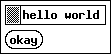
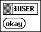
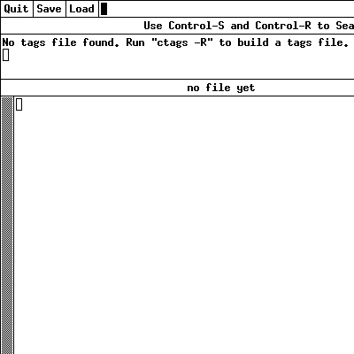
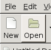
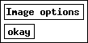
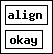

Usage¶
Configuration¶
Add sphinxcontrib.programscreenshot to extensions list in conf.py:
extensions = [
'sphinxcontrib.programscreenshot',
]
Basic¶
The main directive is program-screenshot:
.. directive:: program-screenshot
This directive accepts a single string as argument, which is the command to execute. By default, this command string is split using the shlex modules, which mostly works like common Unix shells like bash or zsh:
.. program-screenshot:: xmessage hello world
The above snippet would render like this:
shell extension¶
Special shell features like parameter expansion are not supported:
.. program-screenshot:: xmessage "$USER"
The above snippet would render like this:
waiting¶
The program is waiting until something is displayed (test window is displayed after 3 sec):
.. program-screenshot:: python tests/tkmsgbox.py 3
:prompt:
:stdout:
:stderr:
The above snippet would render like this:
$ python tests/tkmsgbox.py 3
[stdout] before messagebox
[stderr] before messagebox
If nothing happens, after timeout (:timeout:) assertion is raised.
Options¶
timeout¶
If nothing happens, after timeout (default 12 sec) exception is raised, you can change it with this option:
.. program-screenshot:: xmessage timeout
:timeout: 120
prompt¶
Using the option prompt you can include the command, that produced the output:
.. program-screenshot:: xmessage prompt
:prompt:
The above snippet would render like this:
$ xmessage prompt
stdout¶
Use option stdout to include anything from the standard output stream of the invoked program:
.. program-screenshot:: python tests/tkmsgbox.py 0
:stdout:
The above snippet would render like this:
[stdout] before messagebox

stderr¶
Use option stderr to include anything from the standard error stream of the invoked program:
.. program-screenshot:: python tests/tkmsgbox.py 0
:stderr:
The above snippet would render like this:
[stderr] before messagebox
wait¶
Use wait to wait at least N seconds after first window is displayed. This can be used to skip splash or loading screen.
update-manager is loading data by start (without wait):
.. program-screenshot:: update-manager
:prompt:
:scale: 50 %
The above snippet would render like this:
$ update-manager
{kind=link}
update-manager after loading data (with wait):
.. program-screenshot:: update-manager
:prompt:
:scale: 50 %
:wait: 5
The above snippet would render like this:
$ update-manager
{kind=link}
screen¶
Using the option screen you can set the screen size, default is 1024x768:
.. program-screenshot:: gedit
:screen: 400x400
The above snippet would render like this:
Other resolution:
.. program-screenshot:: gedit
:screen: 100x100
The above snippet would render like this:
Image options¶
Same as in http://docutils.sourceforge.net/docs/ref/rst/directives.html#image
scale, alt¶
Example:
.. program-screenshot:: xmessage Image options
:scale: 200 %
:alt: alternate text
The above snippet would render like this:

height, width¶
Example:
.. program-screenshot:: xmessage Image options
:height: 100px
:width: 100 px
The above snippet would render like this:
align¶
Example:
.. program-screenshot:: xmessage align
:align: right
The above snippet would render like this:
